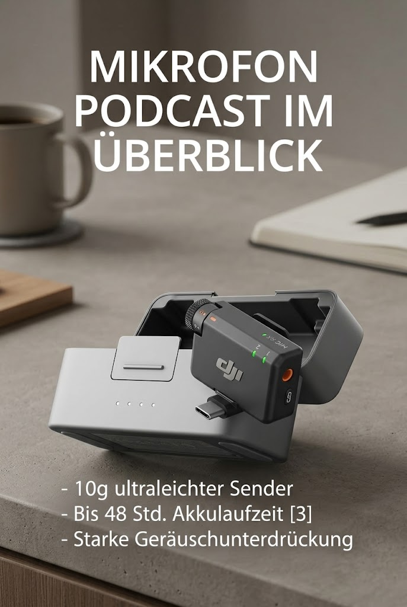

DJI Mic Mini (2 Sender + 1 Empf
DJI Mic Mini (2 Sender + 1 Empf. + Ladesch.), Ultraleicht, Detailr. Audio

Angaben des Herstellers
- Klein, aber oho - Der DJI Mic Mini Sender, ein Mini Bluetooth Mikrofon, ist klein und ultraleicht. Dieses Mikrofon wiegt nur 10 g [1] und ist daher angenehm zu tragen, diskret und ästhetisch ansprechend vor der Kamera
- Detailreicher Sound - Das Mic Mini Ansteckmikrofon liefert hochwertiges Audio. Eine max. Übertragungsreichweite von 400 m [2] sorgt für stabile Aufnahmen, selbst in belebten Außenbereichen wie einer lebhaften Straße. Ein sehr gutes Mini-Mikrofon für Handy, auch geeignet für Vlog
- Verlängerter Akku, mehr Aufnahmezeit - Das kabellose Mikrofon Mic Mini mit Ladeschale bietet bis zu 48 Std. Akkulaufzeit [3], ideal für lange Reisen, Interviews, Livestreaming und andere intensive Nutzungsszenarien
- DJI Ecosystem-Direktverbindung – Mit DJI OsmoAudio kann ein Sender ohne Empfänger direkt mit der Osmo Nano, der Osmo 360, dem Osmo Mobile 7P, der Osmo Action 5 Pro, der Osmo Action 4 oder der Osmo Pocket 3 verbunden werden und liefert dabei erstklassigen Klang
- Starke Geräuschunterdrückung - Das kabellose Bluetooth Mikrofon hat zwei Stufen der Geräuschunterdrückung zur Verfügung: Standard ist ideal für ruhige Innenräume, während Stark in lauten Umgebungen für eine klare Stimme sorgt. [8]
- Jederzeit zuverlässige Audioqualität - DJI Mic Mini verfügt über eine automatische Begrenzung der Lautstärke, wenn der Audioeingang zu hoch ist, um Übersteuerungen zu vermeiden und eine zuverlässige Audioqualität in jeder Umgebung zu gewährleisten
- Enthält zwei DJI Mic Mini Sender, einen Empfänger, eine Ladeschale und weiteres Zubehör und ist damit für eine Vielzahl von Szenarien optimiert, wie z. B. Interviews, Livestreaming, Content-Erstellung und mehr
Werbung. Diese Seite enthält Partnerlinks: Als Amazon-Partner verdiene ich an qualifizierten Käufen. Für dich ändert sich nichts am Preis. Preise und Verfügbarkeit stehen bei Amazon und ändern sich laufend.